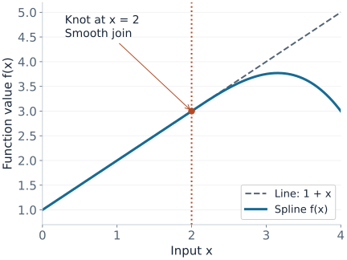
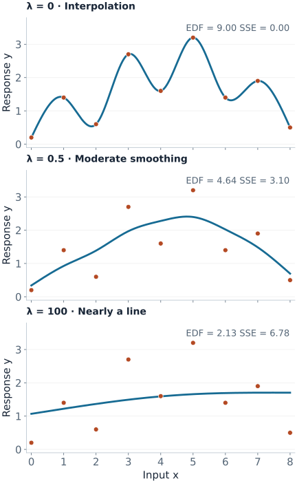

Splines and GAMs
Suppose electricity use rises on both very cold and very hot days. A straight line cannot represent that shape; a high-degree polynomial can bend wildly near the ends. A spline fits low-degree polynomial pieces that join at locations called knots. A generalized additive model (GAM) combines several smooth effects, such as temperature and time of day, while keeping each effect inspectable.
This article builds one spline by hand, fits the same nine observations at three smoothing strengths, and then turns smooth effects into a GAM prediction. Familiarity with basis regression and GLM link functions is enough.
One Smooth Curve from Joined Pieces
A cubic spline uses polynomials of degree at most three. At a simple interior knot, the pieces agree in value, slope, and second derivative. The third derivative may change: a spline can change its bending behavior without a jump or a sharp corner.
Here is a complete example with one knot at $x=2$:
$$f(x)=1+x-\frac14(x-2)_+^3,\qquad (u)_+=\max(u,0).$$For $x\le2$, the extra term is zero and $f(x)=1+x$. For $x>2$, a cubic correction gradually bends the line downward. It does not switch on with a jump.

| $x$ | Line $1+x$ | Correction $-\tfrac14(x-2)_+^3$ | $f(x)$ |
|---|---|---|---|
| 1 | 2 | 0 | 2 |
| 2 | 3 | 0 | 3 |
| 3 | 4 | $-0.25$ | 3.75 |
| 4 | 5 | $-2$ | 3 |
With $K$ interior knots, a general cubic spline can be written in the truncated power basis:
$$f(x)=\beta_0+\beta_1x+\beta_2x^2+\beta_3x^3+\sum_{j=1}^{K}\gamma_j(x-\kappa_j)_+^3.$$The input-to-basis transformation is nonlinear, but the model is still linear in its coefficients. Ordinary or penalized least squares can estimate those coefficients.
B-splines represent the same spline space using better-scaled basis functions with local support: each one is nonzero only on a few neighboring knot intervals. Changing one coefficient therefore has a local effect. Refitting after changing an observation can still change many coefficients and the curve globally. Local basis support is not a guarantee of local influence.
A natural cubic spline adds boundary conditions that yield linear tails when extended beyond the boundary knots. This avoids unrestricted cubic tails, but a linear extrapolation is still an assumption, not evidence about unobserved inputs.
Why Smoothing Is Different from Knot Placement
Imagine putting a knot near every observation. The model can now follow each small fluctuation. A curvature penalty makes it pay for doing so:
$$\hat f_\lambda=\arg\min_f\left\{\sum_{i=1}^n(y_i-f(x_i))^2+\lambda\int_{x_1}^{x_n}[f''(t)]^2\,dt\right\}.$$The first term measures training error. The integral measures squared curvature: a straight line has zero penalty. For this ordinary second-derivative penalty, small $\lambda$ allows more bending and large $\lambda$ suppresses it. As $\lambda\to\infty$, the solution approaches a least-squares line. Extra penalties on the constant and linear parts would change that limit.
Two related constructions are easy to confuse:
- A regression spline uses a chosen finite basis. With no penalty, it fits the best curve available in that basis; it need not interpolate the observations.
- A cubic smoothing spline solves the curvature-penalized problem over a larger function space. Its solution is a natural cubic spline with knots at the distinct observed inputs. With distinct inputs, the $\lambda\downarrow0$ limit interpolates them.
For a finite basis $f(x)=\sum_j\theta_j B_j(x)$, let $B_{ij}=B_j(x_i)$ and $\Omega_{jk}=\int B_j''(t)B_k''(t)\,dt$. Then smoothing is a linear-system problem:
$$ (B^\top B+\lambda\Omega)\hat\theta=B^\top y.$$Solve this system rather than forming an explicit inverse. Numerical conditioning and identifiability still matter. The mgcv smooth-term documentation describes practical basis and penalty choices, including cubic, cyclic, and tensor-product smooths.
Nine Observations, Three Smoothing Strengths
Use $x=(0,1,\ldots,8)$ and $y=(0.2,1.4,0.6,2.7,1.6,3.2,1.4,1.9,0.5)$. These deliberately noisy toy observations make the tradeoff visible. All three curves below solve the same cubic smoothing-spline problem; only $\lambda$ changes.

For a fixed $\lambda$ and fixed inputs, the Gaussian fitted values are linear in the response: $\hat y=S_\lambda y$. The effective degrees of freedom (EDF) are $\operatorname{tr}(S_\lambda)$, which measures how responsive fitted values are to changes in the observed responses.
| $\lambda$ | EDF | Training SSE | Interpretation |
|---|---|---|---|
| 0 | 9.00 | 0.00 | One fitted value per observation; interpolation |
| 0.5 | 4.64 | 3.10 | Fewer effective directions despite the same available knots |
| 100 | 2.13 | 6.78 | Close to the two degrees of freedom of a line |
EDF can be fractional because smoothing shrinks directions continuously. The fixed-$\lambda$ trace does not count the additional adaptivity of selecting $\lambda$ from $y$. A centered GAM smooth also usually excludes the intercept from its reported EDF, so compare like with like.
Reproduce the fit and EDF in Python
import numpy as np
from scipy.interpolate import make_smoothing_spline
x = np.arange(9, dtype=float)
y = np.array([0.2, 1.4, 0.6, 2.7, 1.6, 3.2, 1.4, 1.9, 0.5])
for lam in (0.0, 0.5, 100.0):
fit = make_smoothing_spline(x, y, lam=lam)
# A linear smoother applied to each unit vector reveals its columns.
S = np.column_stack([
make_smoothing_spline(x, e, lam=lam)(x)
for e in np.eye(len(x))
])
print(lam, np.trace(S), np.sum((y - fit(x)) ** 2))The SciPy smoothing-spline documentation states the exact objective used here. The figure source reproduces both figures and the table values. These $\lambda$ values depend on the input units and objective normalization; they are not general tuning defaults.
From One Smooth to a GAM Prediction
A GAM combines smooth effects through a GLM link function:
$$g(\mu)=\beta_0+f_1(x_1)+\cdots+f_p(x_p),\qquad \mu=E[Y\mid X].$$For Gaussian responses with an identity link, the right side is the predicted mean. For a binary response with a logit link, it is log-odds. Each smooth has its own basis and usually its own smoothing parameter.
Consider a fitted churn model with intercept $-1.5$, a tenure contribution of $+0.8$, and a usage contribution of $-0.4$ for one customer. Add contributions before applying the inverse link:
$$\eta=-1.5+0.8-0.4=-1.1,\qquad p=\frac{1}{1+e^{1.1}}\approx0.250.$$The tenure contribution is not an 80-percentage-point increase in churn. It is $0.8$ on the log-odds scale, relative to the term's centering convention. Comparing two tenure values uses $f_{\rm tenure}(a)-f_{\rm tenure}(b)$; its exponential is a conditional odds ratio.
Without a constraint, a constant could move between a smooth and the intercept without changing any prediction. Most smooths therefore satisfy $\sum_i f_j(x_{ij})=0$. This makes term plots interpretable relative to a common baseline; it does not force the smooth to be zero at the mean input. See mgcv's identifiability constraints.
Fit, Check, and Interpret in That Order
- Choose the response family and validation split. Counts, binary outcomes, and continuous measurements need different observation models. Preserve groups or time order when deployment requires it.
- Give the basis enough room. Start with a plausible basis size and estimate smoothing with REML, GCV, or inner validation. A strong penalty can suppress excess flexibility; a small basis cannot represent a shape it never contained.
- Check the basis after fitting. Inspect residual patterns and refit with a larger basis if needed. EDF near the available maximum is a useful warning, but lower EDF alone does not prove the basis sufficient. The mgcv basis-dimension guide gives concrete checks.
- Evaluate the complete pipeline on held-out data. Learn data-dependent knots, transformations, and smoothing choices on training rows. Compare predictive accuracy and calibration against a simpler linear model.
- Read effects where there are observations. Plot the input distribution alongside each effect. Sparse regions and extrapolation need particular care; flexible curves cannot create missing evidence.
Concurvity occurs when one smooth can be approximated by other model terms. Predictions may remain useful while individual effect curves become unstable. A term plot is a conditional model summary, and is not automatically a causal effect.
Finally, check what an uncertainty band covers. A pointwise band at each input does not promise simultaneous coverage over the whole curve. Standard bands may condition on estimated smoothing parameters; mgcv's prediction documentation explains its smoothing-parameter uncertainty correction. A band for a mean effect is also different from a prediction interval for a new noisy observation.
Quick Checks
| Question | Answer |
|---|---|
| Do more knots always produce more wiggles? | No. Knots expand the available function space; the fitted smoothing penalty controls how much flexibility is used. |
| Does $\lambda=0$ always interpolate? | No. An unpenalized low-rank regression spline can still lack enough flexibility. The full smoothing-spline limit interpolates distinct inputs. |
| Does a very large curvature penalty remove an effect? | Not necessarily. An ordinary second-derivative penalty leaves its unpenalized linear part. Shrinking an entire term requires an additional penalty. |
| Can a GAM model interactions? | Yes, if interaction terms are included. A sum of separate univariate smooths excludes interactions on the link scale. |